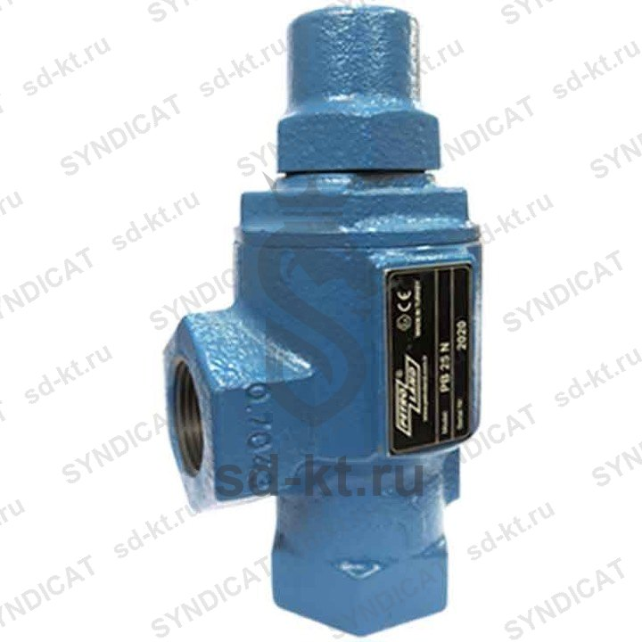

PB25N Клапан дифференциальный (BYPASS) Petroland 1", резьбовое соединение (аналог Blackmer BV1) (Турция)
Раздел: Клапана СУГ · АГЗС
Цена и наличие — по запросу. Поставляем оригинал и аналоги. Доставка по России.
Описание
PB25N Клапан дифференциальный (BYPASS) Petroland 1", резьбовое соединение (аналог Blackmer BV1) (Турция) — позиция из раздела «Клапана СУГ» для АГЗС. Компания SYNDICAT поставляет оборудование и комплектующие для автозаправочных и газозаправочных станций по всей России. Цена и наличие «PB25N Клапан дифференциальный (BYPASS) Petroland 1", резьбовое соединение (аналог Blackmer BV1) (Турция)» — по запросу: оставьте заявку или позвоните, подберём оригинал или аналог и рассчитаем доставку.